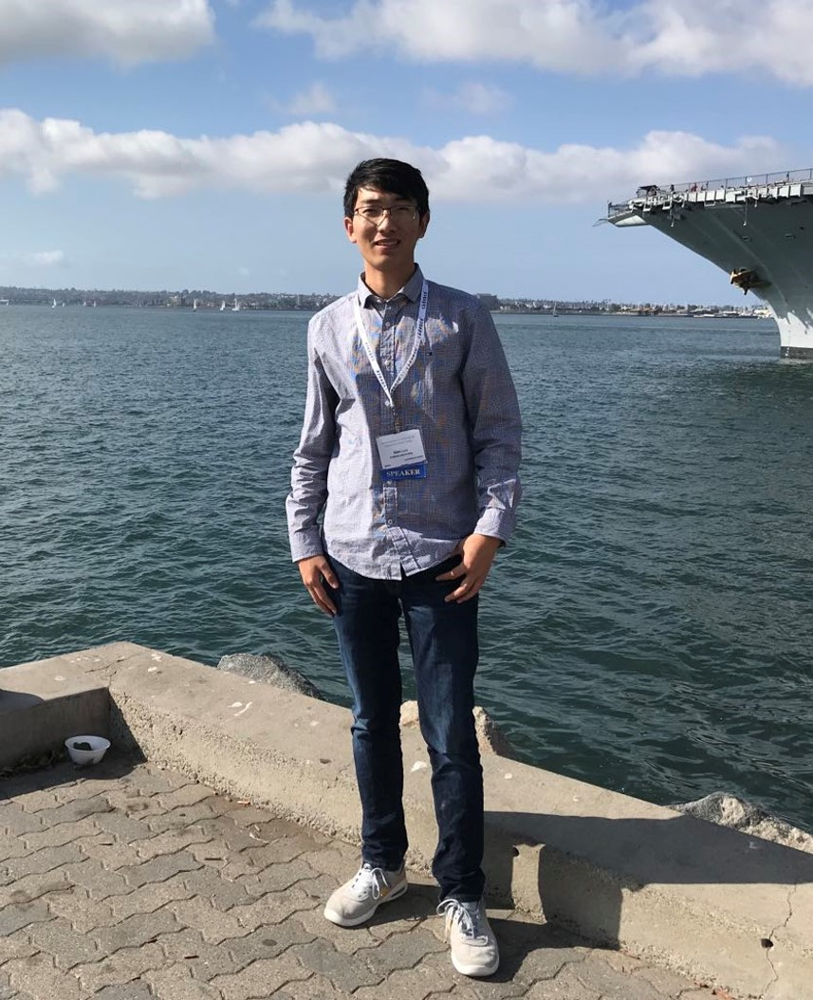

|
 |
Assistant Professor |
Qian Lou is an assistant professor in Computer Science at the University of Central Florida. Before joining UCF, he worked as a Senior Research Scientist at Samsung AI Center in Mountain View, California. He develops open-source models, algorithms, and systems for evolving AI workloads, with a focus on efficiency, security, privacy, and trustworthiness, and he has published 100+ papers in top machine learning, security, and systems venues. His work has received a Best Paper Award at Samsung Research and Best Paper Finalist recognitions at PACT and ICCAD. His research has been supported by major federal programs, including NSF and DoD.
My research builds models, algorithms, and systems to make evolving AI workloads, such as LLMs and agents, efficient and trustworthy. A list of my publications is available here.
Current Projects
Older Projects
| 04 / 2026 | [Paper] | Our paper HBM-CASO has been accepted by ISCA 2026. |
| 04 / 2026 | [Paper] | Our paper on conjunctive prompt attacks in multi-agent LLM systems has been accepted as an ACL 2026 Main Conference Oral. |
| 03 / 2026 | [Paper] | Our paper about arithmetic-comparison FHE has been accepted by S&P 2026. |
| 02 / 2026 | [Paper] | Three papers have been accepted by DAC 2026. |
| 02 / 2026 | [Paper] | Our work on copyright protection of large vision-language models has been accepted by CVPR 2026. |
| 02 / 2026 | [Leaderboard] | Our LLM Router (R2-Router) ranks #1 on RouterArena. |
| 01 / 2026 | [Paper] | Our work on Agentic AI for FHE code generation has been accepted by ICLR 2026. |
| 12 / 2025 | [Paper] | One paper about Resilient FHE has been accepted by ASPLOS 2026. |
| 12 / 2025 | [Paper] | Two papers have been accepted by ICASSP 2026. |
| 11 / 2025 | [Paper] | Our work on Encrypted Computing for AI has been accepted by PETS 2026. |
| 10 / 2025 | [Paper] | One paper about Quantum Computing Security has been accepted by NDSS 2026. |
| 09 / 2025 | [Paper] | Our federated learning with encrypted aggregation (<2x overhead) is accepted by NeurIPS 2025. |
We are a collaborative team.
Current Ph.D. students:
Jiaqi Xue (2023 Spring-)
Rochana Prih Hastuti (2023 Fall-)
Mayank Kumar (2024 Fall-)
Hedong Zhang (2024 Fall-)
Yifei Zhao (2024 Fall-, with Mengxin Zheng)
Erwin Eko Wahyud (2024 Fall-, with Yan Solihin)
Rakibul Hasan Rajib (2025 Fall-)
Ahasan Kabir (2025 Fall-)
Yukuan Zhang (2025 Fall-)
Xi Shi (2025 Fall-)
Graduated Ph.D. students:
Mansour Al Ghanim (graduated 2025), faculty at King Khalid University
2025: Distinguished Speaker at Warren B. Nelms Annual AIoT Conference
2022: Best Paper Award at Samsung Research America
2021: Luddy Outstanding Research Award from Indiana University Bloomington
2020: Best Paper Finalist at ACM Parallel Architectures and Compilation Techniques (PACT)
2018: Best Paper Finalist at International Conference on Computer-Aided Design (ICCAD)
NSF: Panelist
ICLR 2026: Area Chair
ACL 2026: Area Chair
NeurIPS 2025: Area Chair
CCS 2026: Program Committee
NDSS 2026: Program Committee
GLSVLSI 2025: Track Chair
ISCA: Program Committee
DAC: Technical Program Committee
ISCA 2023: Local Area Chair
Tiny and Fair ML Design Contest Organizer at ESWEEK 2023
IEEE Transactions on Information Forensics and Security: Technical Program Committee
AI for Content Creation (AI4CC) Workshop @ CVPR 2024: Area Chair
AAAI: Senior Program Committee
2022 Fall: CDA 5106 Advanced Computer Architecture
2023 Spring: CAP 6614 Current Topics in Machine Learning
2023 Fall: CDA 5106 Advanced Computer Architecture
2024 Spring: CAP 6614 Current Topics in Machine Learning
2025 Spring: CAP 6614 Current Topics in Machine Learning
[ISCA 26] HBM-CASO: A Coordinated Approach to HBM System-Level and On-Die ECC |
[ACL 26] Conjunctive Prompt Attacks in Multi-Agent LLM Systems |
[S&P 26] Efficient Arithmetic-and-Comparison Homomorphic Encryption with Space Switching |
[DAC 26] HW-Router: Hardware-Aware Routing for Scalable Multi-LLM Serving |
[DAC 26] SecureRoute: Input-Adaptive Encrypted Routing for Efficient and Accurate MPC-Based Transformer Inference |
[CVPR 26] SIF: Semantically In-Distribution Fingerprints for Large Vision-Language Models |
[PoPETs 26] SoK: Can Fully Homomorphic Encryption Support General AI Computation? A Functional and Cost Analysis |
[ASPLOS 26] ReliaFHE: Resilient Design for Fully Homomorphic Encryption Accelerators |
[SaTML 26] RobPI: Robust Private Inference against Malicious Client |
[ICLR 26] FHE-Coder: Secure Agentic Code Generation for Fully Homomorphic Encryption |
[ICASSP 26] VQEzy: An Open-Source Dataset for Parameter Initialization in Variational Quantum Eigensolvers |
[ICASSP 26] DiffQ: Unified Parameter Initialization for Variational Quantum Algorithms via Diffusion Models |
[NeurIPS 25] DictPFL: Efficient and Private Federated Learning on Encrypted Gradients |
[EMNLP 25] Evaluating the Robustness and Accuracy of Text Watermarking Under Real-World Cross-Lingual Manipulations |
[EMNLP 25] Factuality Beyond Coherence: Evaluating LLM Watermarking Methods for Medical Texts |
[DAC 25] zkVC: Fast Zero-Knowledge Proof for Private and Verifiable Computing |
[ICLR 25] CipherPrune: Efficient and Scalable Private Transformer Inference |
[S&P 25] DataSeal: Ensuring the Verifiability of Private Computation on Encrypted Data |
[NeurIPS 24] HEPrune: Fast Private Training of Deep Neural Networks With Encrypted Data Pruning |
[EMNLP 24] BadFair: Backdoored Fairness Attacks with Group-conditioned Triggers |
[EMNLP 24] Jailbreaking LLMs with Arabic Transliteration and Arabizi |
[MICRO 24] Trinity: A General Purpose FHE Accelerator |
[CCS-WAHC 24] HEBridge: Connecting Arithmetic and Logic Operations in FV-style HE Schemes |
[CCS-LAMPS 24] TrojFair: Trojan Fairness Attacks |
[CCS-LAMPS 24] CryptoTrain: Fast Secure Training on Encrypted Data |
[ACL 24] CR-UTP: Certified Robustness against Universal Text Perturbations on Large Language Models |
[ISLPED 24] OFHE: An Electro-Optical Accelerator for Discretized TFHE |
[PACT 24] BoostCom: Towards Efficient Universal Fully Homomorphic Encryption by Boosting the Word-wise Comparisons |
[ECCV 24] WBP: Training-time Backdoor Attacks through Weight Bit Poisoning. |
[ECCV 24] SSL-Cleanse: Trojan detection and mitigation in self-supervised learning. |
[Mathematics 24] Unveiling Fall Triggers in Older Adults: A Machine Learning Graphical Model Analysis |
[NAACL 24] TrojFSP: Trojan Insertion in Few-shot Prompt Tuning |
[NeurIPS 23] TrojLLM: A Black-box Trojan Prompt Attack on Large Language Models |
[ECAI 23] TrojBits: A Hardware Aware Inference-Time Attack on Transformer-Based Language Models |
[ISQED 23] PriML: An Electro-Optical Accelerator for Private Machine Learning on Encrypted Data |
[ICLR 23] TrojText: Invisible Test-time Trojan Insertion |
[CVPR 23] TrojViT: Trojan Insertion in Vision Transformers |
[DAC 23] Primer: Privacy-Preserving Transformer on Encrypted Data |
[CVPR 22] Lite-MDETR: A Lightweight Multi-Modal Detector |
[DAC 22] MATCHA: A Fast and Energy-Efficient Accelerator for Fully Homomorphic Encryption over the Torus |
[ICLR 22] Language model compression with weighted low-rank factorization |
[ICLR 22] DictFormer: Tiny Transformer with Shared Dictionary |
[DATE 22] coxHE: A software hardware co-design framework for FPGA acceleration of homomorphic computation |
[EMNLP 21] Low Latency Privacy-Preserving Text Analysis With GRU |
[ICML 21] HEMET: A Homomorphic-Encryption-Friendly Privacy-Preserving Mobile Neural Network Architecture |
[IJCAI 21] Automatic Mixed-Precision Quantization Search of BERT |
[ICLR 21] SAFENet: A Secure, Accurate, and Fast Neural Network Inference |
[NeurIPS 20] Falcon: Fast Spectral Inference on Encrypted Data |
[NeurIPS 20] AutoPrivacy: Automated Layer-wise Parameter Selection for Secure Neural Network Inference |
[NeurIPS 20] Glyph: Fast and Accurately Training Deep Neural Networks on Encrypted Data |
[PACT 20] Helix: Algorithm/Architecture Co-design for Accelerating Nanopore Genome Base-calling |
[ICLR 20] AutoQ: Automated Kernel-Wise Neural Network Quantization |
[DATE 20] LightBulb: A Photonic-Nonvolatile-Memory-based Accelerator for Binarized Convolutional Neural Networks |
[ASP-DAC 20] MindReading: An Ultra-Low-Power Photonic Accelerator for EEG-based Human Intention Recognition |
[NeurIPS 19] SHE: A Fast and Accurate Deep Neural Network for Encrypted Data |
[DATE 19] HolyLight: A Nanophotonic Accelerator for Deep Learning in Data Centers |
[ICCAD 18] 3DICT: a reliable and QoS capable mobile process-in-memory architecture for lookup-based CNNs in 3D XPoint ReRAMs |
[CAL 18] BRAWL: A Spintronics-Based Portable Basecalling-in-Memory Architecture for Nanopore Genome Sequencing |
[NVMSA 17] Runtime and reconfiguration dual-aware placement for SRAM-NVM hybrid FPGAs |
[US20240080423A1] Fusion techniques for combining most significant bits and least significant bits of image data in image processing or other applications |
[US20230177338A1] Small and fast transformer model for multi-modal or other tasks |
[US20230104491A1] Small and fast transformer with shared dictionary |
[US20230106213A1] Machine learning model compression using weighted low-rank factorization |
[US20220121947A1] Method and system for secure, accurate and fast neural network inference |